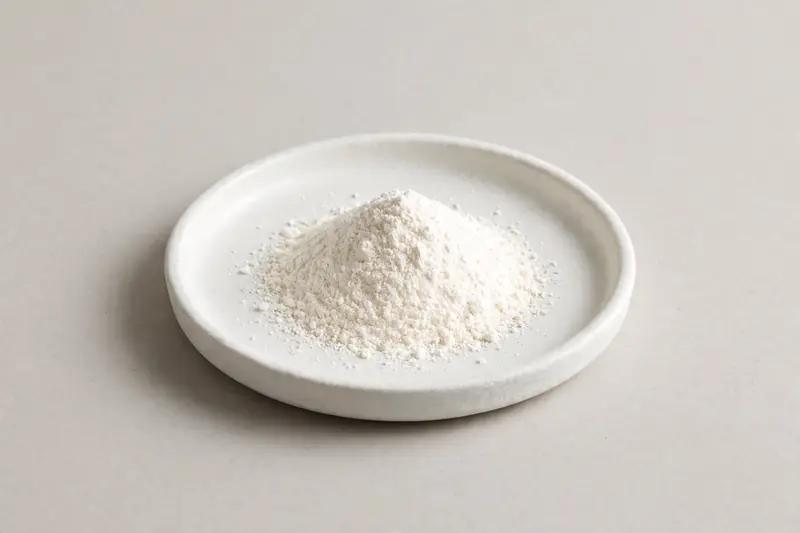

Cosmetic active for skin-brightening-positioned formulations, commonly requested at 99% grade.

Overview
Alpha-arbutin is a cosmetic active based on a glucose-hydroquinone structure, widely used in skin-brightening-positioned skincare and colour cosmetics. The 99% grade is the most commonly requested specification, typically assessed by HPLC. Demand has grown alongside the clean-beauty and tone-evening segments. As a Xi'an-based trading company, we source through partner producers and confirm feasibility once your target spec is received.
Specifications below reflect commonly requested options in the market — not a stock list. Share your target spec and we'll confirm exactly what we can supply, honestly.
| Specification | Details |
|---|---|
| Botanical identity | Alpha-arbutin powder |
| Marker compound | Commonly requested spec grades: 99% alpha-arbutin, actual specs confirmed on inquiry |
| Appearance | White to off-white fine powder |
| Analytical methods | Methods referenced in buyer specifications: HPLC |
| Mesh size | Typically 80–100 mesh (confirm per inquiry) |
| Testing | COA/TDS arranged on request; scope agreed per your spec |
Applications
Documentation
We don't claim in-house labs or certifications we don't hold. COA and TDS documents can be arranged on request, and testing scope is agreed against your specification before supply.
FAQ
Related products
Silybum marianum
Key marker: Silymarin
View specs →Ginkgo biloba
Key marker: Flavone Glycosides
View specs →Panax ginseng
Key marker: Ginsenosides
View specs →allantoin (5-ureidohydantoin)
Key marker: Allantoin 99%
View specs →serrapeptase (Serratia peptidase)
Key marker: SPU Activity
View specs →Send your target spec and volumes — we'll respond with a tailored quotation.
Request a Quote